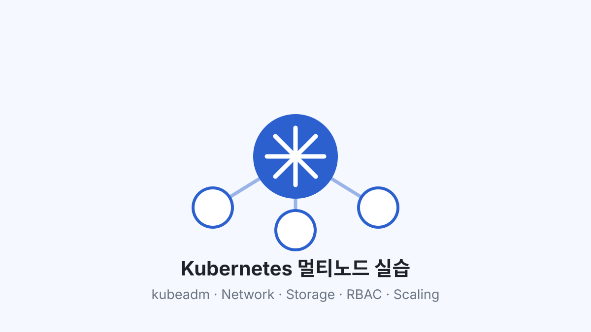

Control Plane / Worker 구성
← Projects
Kubernetes
02 / Infrastructure lab
Kubernetes
Multi-node Lab
kubeadm 기반 멀티노드 구축과 장애 분석
Network, Storage, RBAC, Scaling을 직접 구성했습니다. 문제가 생기면 설정을 먼저 바꾸지 않고 Event와 Resource State에서 어디까지 정상인지부터 확인했습니다.

01 / Overview
무엇을 직접 구성했는지부터.
TypePersonal / training lab
Period2026
ScopeCluster · Network · Storage · Security · Scaling · Monitoring
Service · Ingress · MetalLB 연결
상태와 Event로 범위 좁히기
Deep dive
필요한 부분만 펼쳐서 보세요.
구성 요소별로 무엇을 확인했는지 정리했습니다.
02Cluster멀티노드 환경을 어떻게 구성했나
Control PlaneAPI / scheduling
↔
Worker NodesPod runtime
↔
CalicoPod networking
↔
CoreDNSservice discovery
구성 후에는 Node Ready 여부만 보지 않고 Pod가 스케줄되고 서로 통신하는지까지 확인했습니다.
03Network외부 요청이 Pod까지 어디를 거쳐 가나
Clientrequest
→
MetalLBexternal IP
→
Ingresshost / path
→
Serviceendpoint
→
Podapp
Service
Selector와 Endpoint가 실제 Pod를 가리키는지 확인했습니다.
Ingress
Host/Path와 Service port가 맞는지 대조했습니다.
DNS
Service 이름이 CoreDNS를 통해 해석되는 흐름을 확인했습니다.
04StoragePVC가 Pending일 때 무엇부터 봤나
Local PV
Node와 묶이는 저장소
Local PV를 통해 Node Affinity와 Scheduling 제약을 확인했습니다.
NFS
공유 저장소
NFS를 PVC와 연결하고 상태 저장 워크로드에서 사용했습니다.
PVC가 Pending이면 PVC만 보지 않고 PV, StorageClass, Access Mode, Node 조건과 Event를 같이 봤습니다.
05Security누가 무엇을 할 수 있는지, 어디까지 통신할 수 있는지
01ServiceAccount
Pod identity
02RBAC
API permission
03NetworkPolicy
traffic scope
권한 오류가 나면 ServiceAccount와 Role/RoleBinding을 대조하고, 통신 문제는 NetworkPolicy 범위를 따로 확인했습니다.
06ScalingReplica 수는 어떤 신호로 바뀌나
HPA
Resource metric
CPU/Memory 기준으로 replica가 조정되는 흐름을 확인했습니다.
KEDA
Event-driven
외부 Metric/Event를 기준으로 확장·축소되는 구조를 실습했습니다.
07Observability상태를 바꾸기 전에 어떤 증거를 봤나
Metrics
Prometheus / Grafana
리소스 사용량과 workload 상태를 보고 Scaling 실습과 연결했습니다.
State
Events / Resource status
Pod, Service, PVC, RBAC 문제에서 실제 상태와 Event를 먼저 확인했습니다.
08Troubleshooting증상별로 만든 확인 순서
ImagePullBackOff
Pod Event에서 image 이름, Registry 접근, pull 조건 중 어디서 실패했는지 좁혔습니다.
Service / Ingress
Selector → Endpoint → Port → Ingress Rule 순으로 요청 경로를 확인했습니다.
RBAC
ServiceAccount와 Role/RoleBinding을 비교해 어떤 API 동작에 권한이 없는지 봤습니다.
PVC Binding
PVC·PV·StorageClass와 Event를 같이 보고 Capacity, Access Mode, Node 조건을 확인했습니다.
실습을 통해 Kubernetes 장애는 Pod 하나만 봐서는 설명되지 않는 경우가 많다는 점을 확인했습니다.